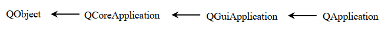
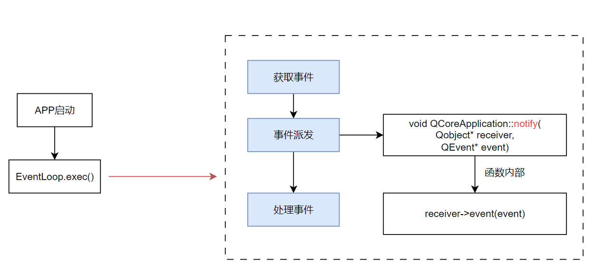
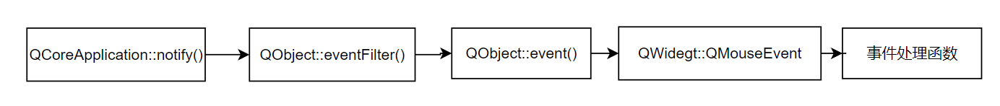

16 Qt的事件机制
Qt的事件机制
Qt是个事件驱动的编程框架，各种事件的产生和处理伴随着整个程序运行的主轴，因此搞懂事件处理机制非常重要。
Qt的信号槽底层也是利用事件机制来实现的！
1.事件的定义
1.1定义
事件是由程序内部或外部产生的事情或某种动作的通称。比如用户按下键盘或鼠标，就会产生一个键盘事件或鼠标事件(这是由程序外部产生的事件)；再如，当窗口第一次显示时，会产生一个绘制事件，以通知窗口需要重新绘制其自身，从而使该窗口可见(这是由程序内部产生的事件) 。
1.2事件与信号的区别
- 信号的发送者和接受者都是QObject派生类的对象，属于==对象-对象==之间的通信
- 事件通常来自底层的操作系统，或手动调用的。它的发送者是事件循环，接收者都是QObject派生类对象，属于==事件循环-对象==之间的通信。（本质上是操作系统-事件循环-对象 之间的通信，因为事件循环需要先从操作系统或者程序框架层面捕捉事件，然后再分发）
什么时候用信号槽，什么时候用事件来处理呢？
信号槽通常用于对象-对象间的通信，那么如果是自己给自己发信号，那么就有些冗余了，比如自己发送了重绘自己的信号、自己发送了自己被鼠标点击的信号….况且这些信号的发出一般都是基于事件的(在事件处理函数中发出这些信号)。因此这种情况可以直接重写信号处理函数，而不再用信号槽了。
1.3Qt中事件的实现
Qt框架使用QEvent及其子类来定义每一种事件，比如鼠标触发的事件QMouseEvent等等
2.事件循环
2.1什么是事件循环
普通的程序通常不会一直执行下去，在执行完了
main()函数中的所有东西后就会结束。而像Qt这种带ui的程序，或者其他类似的(比如浏览器)，通常我们打开后只有人为关掉他才会结束，而不关的话他就一直运行，这是为什么嘞？
因为这些程序中都有事件循环来让程序一直运行，举个例子：
1 | function loop() |
这个loop()实际上就是个事件循环，事件循环的最基础版本就是个while循环，当满足条件时他就一直循环。
而如果循环中什么事情也不做也没什么意义，所以事件循环内部通常还需要：不断获取外部传来的事件、做出事件处理，直到发生quit事件，则循环结束。
有“取事件”的过程，那么自然有“存储事件”的地方，要么是操作系统存储，要么是软件框架存储。
- 存储事件的地方，我们称作 “事件队列” Event Queue
- 处理事件，我们也称作 “事件分发” Event Dispatch
2.2Qt中的事件循环
2.2.1QEventLoop类
QEventLoop即Qt中的事件循环类，主要接口如下：
1 | int exec(QEventLoop::ProcessEventsFlags flags = AllEvents) |
exec是启动事件循环，调用exec以后，调用exec的函数那行下边的代码就不会执行了(因为进入循环了啊)exit是退出事件循环processEvents是立即进行事件处理（会把事件循环队列中的所有事件全部执行掉），一般是在exec内部被调用
我们的UI界面通常需要不断刷新来保证使用的流畅性，而有的时候，我们的某个函数非常耗时，导致PC指针迟迟不能回到事件循环中，此时UI界面就会卡主，这种情况下，可以在这个很耗时的函数中主动调用一次processEvents来先刷新一下UI再接着计算。
1 | //耗时操作 |
2.2.2其他能开启事件循环的类
Qt中的事件循环本质上都是靠QEventLoop和其.exec()方法来实现的，但实际使用时通常见不到QEventLoop，而是他的一些派生类。
(1)主事件循环类：QCoreApplication、QGuiApplication、QApplication
通常情况下，在Qt程序的主线程的main()函数中都会有这3个类的某一个，并且开启主事件循环
1 | int main(int argc, char *argv[]) |
这几个类的继承关系如下：

QCoreApplication：主要提供无 GUI 程序的==事件循环== ，里面维护了一个QEventLoopQGuiApplication：用于管理 GUI 程序的控制流和主要设置QApplication：该类专门为QGuiApplication提供基于QWidget的程序所需的一些功能
(2)消息对话框类：QMessageBox、QDialog….
(3)QThread类
可以在QThread的run()创建的子线程中执行exec()来开启事件循环，这样这个子线程也就被作为事件循环“一直阻塞”了
3.Qt中事件的处理流程
Qt的各个事件通常都在事件循环中被分发和处理，其流程如下图所示：

事件分发的核心就是调用receiver的
event()函数，在该函数中通过多态实现了对事件的具体处理方法
3.1具体的例子
例子1：从调用QLabel的setpixamp()到其图像被更新的全过程：
- 首先调用QLabel的
setpixamp()，QLabel会发送一个重绘事件给系统，这个事件会被加入到事件循环中等待处理 - 当事件循环处理到QLabel发送的重绘事件时，将事件再次派发给对应的QLabel实例
- QLabel实例调用
paintEvent()事件处理函数，进行绘制
也就是说QLabel的绘制不是发生在调用
setpixamp()那一刻，而是由事件循环异步绘制的
例子2：从对象A发送信号到对象B执行槽函数的全过程：
- 信号在事件循环中被视为特殊类型的事件，称为事件通知。当对象A
emit信号时，Qt 会将该信号封装成一个事件，并将其放入事件循环中等待处理 - 当事件循环取出该事件时，使用接收对象调用
QObject::event()方法（这实际上就完成了事件派发） - 用户自定义的槽函数也会被封装成事件处理函数，在
event()中就被调用了
4.事件处理
事件从分发到被处理的完整流程如下：

4.1事件处理函数
任何QObject子类都可以进行事件处理，Qt的事件处理需要通过事件处理函数来实现
Qt的事件处理器函数处于食物链的最末端，每个事件处理器函数都对应一个唯一的事件，这为我们重新定义事件的处理动作提供了便利。另外，Qt提供的这些事件处理器函数都是回调函数，也就是说作为使用者我们只需要指定函数的处理动作，关于函数的调用是不需要操心的，当某个事件被触发，Qt框架会调用对应的事件处理器函数。
4.1.1常见的事件处理函数
(1)鼠标相关事件
1 | [virtual protected] void QWidget::mousePressEvent(QMouseEvent *event); |
(2)键盘相关事件
1 | [virtual protected] void QWidget::keyPressEvent(QKeyEvent *event); |
(3)窗口相关事件
1 | [virtual protected] void QWidget::paintEvent(QPaintEvent *event); |
通常UI的被动变化会自动触发paintEvent事件，比如：被拖拽移动，缩放大小，鼠标放到按键上，setText()….
但有的时候需要主动使UI变化，比如：定时让UI发生一些改变、后台数据更新时更改前台UI…这时候就需要我们自己触发paintEvent事件。最常用的触发方式就是调用该Widget的update()函数
Qt为各个事件提供了默认的处理函数，但是有时候我们需要自己重写以上的那些事件函数
4.2事件分发
当事件产生被发送到对应的窗口之后，窗口并不会直接处理这个事件，而是对这些事件进行细分，然后根据事件的类型再次进行分发，对应的事件处理器函数得到这个分发的事件之后就开始处理这个事件。
以窗口事件的分发为例，它的事件分发函数为
1 | [override virtual protected] bool QWidget::event(QEvent *event); |
4.2.1QEvent类常用函数
通过事件分发器的函数原型可以得知，关于事件类型的判断是基于参数完成的，这个参数是一个QEvent类型的对象，下面来看一下这个类中常用的一些API函数:
1 | void QEvent::accept(); |
1 | void QEvent::ignore(); |
1 | bool QEvent::isAccepted() const; |
1 | QEvent::Type QEvent::type() const; |
4.2.2事件分发具体过程
在不需要人为干预的情况下，事件分发器会自主的完成相关事件的分发，下面来还原一下事件分发器的分发流程，以下是这个函数的部分源码展示：
1 | bool QWidget::event(QEvent *ev) |
可以关注到，事件分发函数event()的返回值是bool类型，下面介绍一下含义：
- 如果传入的事件已被识别并且处理，则需要返回 true，否则返回 false。如果返回值是 true，那么 Qt 会认为这个事件已经处理完毕，不会再将这个事件发送给其它对象，而是会继续处理事件队列中的下一事件。
因此如果想要过滤某个事件，可以通过重写event()函数，并在该函数内对该事件不处理，直接返回true即可
4.3事件过滤
除了使用事件分发器来过滤Qt窗口中产生的事件，还可以通过事件过滤器过滤相关的事件。当Qt的事件通过应用程序对象发送给相关窗口之后，窗口接收到数据之前这个期间可对事件进行过滤，过滤掉的事件就不能被继续处理了。
QObject有一个eventFilter()函数，用于建立事件过滤器。函数原型如下：
1 | [virtual] bool QObject::eventFilter(QObject *watched, QEvent *event); |
参数:
- watched：要过滤的事件的所有者对象
- event：要过滤的具体的事件
- 返回值：如果想过滤掉这个事件，==停止==它被进一步处理，返回true，==否则==返回 false
既然要过滤传递中的事件，首当其冲还是要搞明白如何通过事件过滤器进行事件的过滤，主要分为两步：
1.给要被过滤事件的类对象安装事件过滤器类
1 | void QObject::installEventFilter(QObject *filterObj); |
- 假设调用
installEventFilter()函数的对象为当前对象，那么就可以基于参数指定的filterObj对象来过滤当前对象中的指定的事件了。 - 事件过滤器类(
filterObj)内部需要重载eventFilter()函数
2.在要进行事件过滤的类中（filterObj 参数对应的类）重写从QObject类继承的虚函数eventFilter()。
事件过滤器和被安装过滤器的组件必须在同一线程，否则，过滤器将不起作用。另外，如果在安装过滤器之后，这两个组件到了不同的线程，那么，只有等到二者重新回到同一线程的时候过滤器才会有效。
4.3.1为什么要用事件过滤机制？
- 事件过滤机制可以==简化代码==，比如要实现以下功能：双击某个
QLabel可以让他变大，个人想到的实现方式有一下几种：
(1)使用信号槽机制
(2)重写一个QLabel的子类，在子类中重写mouseDoubleClickEvent()这个事件处理函数
(3)重写一个QLabel的子类，在子类中重写event()这个事件分发函数，如果事件是双击，则调用自定义的函数改变Label的大小
(4)重写一个QApplication的子类，在子类中重写notify()这个函数，过滤掉QLabel的双击，然后改成自定义的函数
(5)在QLabel对象的父对象上重载eventFilter()函数，并给其安装事件过滤器过滤掉双击事件，改成自己实现的新函数
- 事件过滤机制可以屏蔽掉一些事情，这是信号槽做不了的比如，我想屏蔽掉
QText空间中按Tab间会换行的功能，就不能使用信号槽来做了，只能用事件过滤